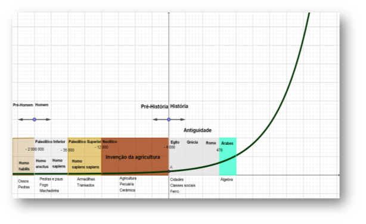

A Arte de Criar Número
História
Pré-requisitos
 Ensino fundamental menor
Ensino fundamental menor
 Gosto pela descoberta
Gosto pela descoberta
 Possuir espírito investigativo
Possuir espírito investigativo
O presente tópico faz uma abordagem sobre os sistemas de numeração. A pesquisa fortaleceu-se dos princípios matemáticos desenvolvidos nos livros de Malba Tahan “O Homem que calculava”; nas ideias apresentadas no livro de Mário Lívio “Razão Áurea: a história do número Fi, um número surpreendente; nas lições aprendidas no livro Didática da Matemática de Rosa Neto. Além do referencial didático supracitados, há um olhar todo especial alinhado à experiência do autor em seus 20 anos na docência, que abrange os ensinos fundamental, médio e superior.
Há uma pergunta que habita o imaginário das pessoas que remete a ideia de número, ou melhor: como os números surgiram e quem os criou? A resposta a essa pergunta não é simples, entretanto existem alguns parâmetros que nos ajudar a entender essa questão, assim como também nos provoca a pensar o desenvolvimento da matemática.
Nessa perspectiva, Rosa Neto, 1998 situa o desenvolvimento dos números segundo a evolução do próprio homem e alinhado à sua própria sobrevivência. A figura a segui mostra alguns aspectos dessa linha do tempo e as principais características da trajetória do desenvolvimento da espécie humana. A curva fora idealizada em conformidade com os fatos históricos, entretanto não é uma expressão matemática exata dos mesmos, mas serve tão somente para ilustrar o processo do desenvolvimento do homem ao longo de sua história.

Diagrama 01 – Trajetória do tempo
Fonte: elaborado pelo autor, 2017, com base em Rosa Neto, 1998.
Rosa Neto (1998), assevera que a matemática do homem do Paleolítico Inferior era essencialmente adjetiva, ou seja, era formada de esquemas mentais rudimentares voltados para ideia de simpática e igualdade. Há um consenso entre os historiadores que o sentido de número surgiu ainda no paleolítico superior. Nesse ponto vale ressaltar a diferente entre sentido de número, número, numeral, contagem, símbolo e sistema de numeração. Na ordem de surgimento considera-se que o sentido de número precedeu a ideia de contagem. Essa última pode ter sido construída paralelamente aos numerais, que levou a criação dos sistemas de numeração. A seguir será definido cada um desses termos, no sentido de facilitar a compreensão desse conteúdo a partir de uma noção intuitiva.